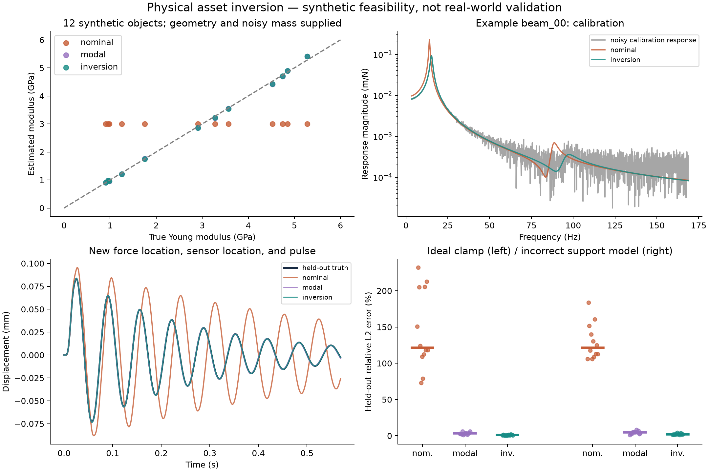

The geophysics behind the project
What can a seismic background add?
Seismic imaging sees inside what you cannot open, using waves. Spatial AI builds 3D scenes from a few views and must fill in the rest. This page explains the main seismic methods with pictures you can play with, then asks where they might help.
Purpose. To brainstorm how seismic imaging experience (migration, tomography, imaging with multiples, full-waveform inversion, resolution and uncertainty analysis) could contribute to spatial intelligence and physical AI, and to be honest about what already exists. It starts from open problems World Labs describes on its own public pages, uses public information only, and is not an evaluation of anyone's product.
Open problems World Labs describes
Starting points for the ideas here: open problems that World Labs' own posts and documentation describe. Quotes are short and attributed; they were retrieved through a summarising tool, so check the primary page before reusing them.
Seismic methods in pictures
Five small models, each with a control to change. They are simplified on purpose, and each says where it stops being realistic.
Your toolkit, mapped
Pick a seismic skill, on the map or with the buttons. Each panel says what the skill is, what already exists in vision and robotics, what this project tested, and what is still a hypothesis.
Plain-language glossary
Show the nine terms
What the experiments taught

Where the open niches look plausible, and where they do not
A ledger from the verified physical-AI literature. "Covered" means published work already does it; "open" means not found in an arXiv abstract search, which is not proof of absence.
Show the ledger (eight areas)
| Area | Already covered | What remains open | Our evidence |
|---|
Ways to contribute, and what each needs
Needs no permission
- Open evaluation methods and blind tests on synthetic or public data.
- Identifiability and experimental-design analysis for real-to-sim parameters.
- Wave-based acoustics on measured geometry using public room datasets.
- Feedback and corrections from anyone, including World Labs, via GitHub issues.
Needs credits and written permission
- Ensembles of real Marble generations from one photo (an estimated $8–13 for a measured-room study plus about $4–6 more for an ensemble, from the earlier study's estimates).
- Any use of Marble itself, including its public API: read World Labs' current terms of service in full and obtain their agreement first.
- Any work that needs access to unreleased models.